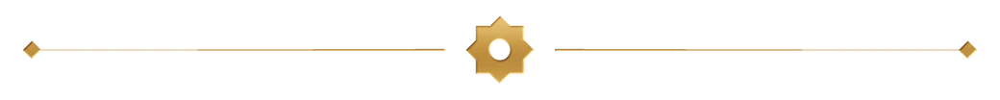

Gala Dinner Fellowship 2026
What Remains The Meaning We Leave
A night of gratitude · growth · lasting meaning

Kabupaten Bone Bolango
Dengan penuh rasa syukur, kami mengundang Bapak/Ibu untuk hadir dalam Gala Dinner Fellowship 2026.
Sebuah malam intimate yang mempertemukan Prof. Ary Ginanjar, para orang tua asuh, dan anak-anak asuh dalam kehangatan kebersamaan. Momen untuk merayakan perjalanan, pertumbuhan, serta kebaikan yang telah ditanamkan dan terus hidup dalam setiap langkah kehidupan.
Kehadiran Bapak/Ibu akan menjadi kehormatan dan kebahagiaan bagi kami.
Jumat18 Desember 2026
The Evening
Rangkaian Acara
- 18.00–18.45
Arrival & Welcome
- 18.45–18.50
Opening Video (The Seed, The Growth, What Remains)
- 18.50–18.52
Bumper (WHAT REMAINS)
- 18.52–18.57
Opening
- 18.57–19.05
Tilawah Al-Qur'an
- 19.05–19.20
Voice of Fellowship (The Growth)
- 19.20–19.50
Gala Dinner + Live Music
- 19.50–20.35
A Conversation with Ary Ginanjar (What Remains)
- 20.35–20.50
A Letter That Remains (Performance)
- 20.50–20.55
Doa Bersama
- 20.55–21.00
Closing
- 21.00–Selesai
Foto Bersama & Farewell
Busana
Busana / Dress Code
Batik
(Nuansa Warna: Biru Dongker, Emas, atau Hitam)
RSVP
Konfirmasi Kehadiran (RSVP)
Mohon konfirmasi kehadiran sebelum 5 Desember 2026